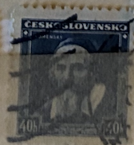
| SOURCE | TITLE| IMAGE MATCH | click to source page |
| Shutterstock | Moscow Russia May 05 2019 Stamp Stock Photo 1413221456 | Shutterstock | 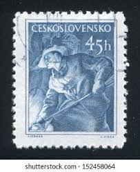 |
| eBay | Czechoslovakia 397-398,CTO.Michel 597-598. Trade Union Congress,1949. | eBay | 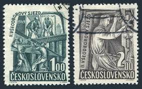 |
| alamy.de | Tschechoslowakei - ca. 1945: Eine Briefmarke der Tschechoslowakei zeigt Josef Gabcik (Fallschirmspringer Stockfotografie - Alamy | 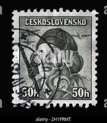 |
| Pngtree | Foundry Worker Background Images, HD Pictures and Wallpaper For Free Download | Pngtree | 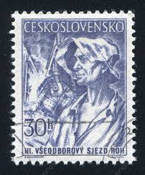 |
| Alamy | Russia people history Cut Out Stock Images & Pictures - Alamy | 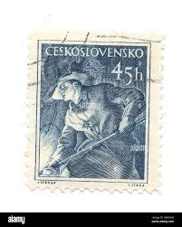 |
| Alamy | Czechoslovakia stamp hi-res stock photography and images - Page 28 - Alamy | 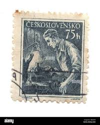 |
| HipStamp | Czechoslovakia 647: 40h Postwoman, CTO, F-VF | Europe - Czech Republic, General Issue Stamp / HipStamp | 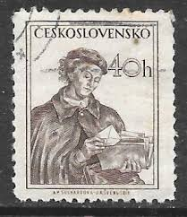 |
| Dreamstime.com | MOSCOW, RUSSIA - JUNE 20, 2017: a Stamp Printed in Czechoslovakia Shows Welder, Circa 1960 Editorial Stock Photo - Image of philatelic, heritage: 99586458 | 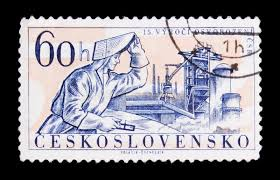 |
| eBay | Specimen, Czechoslovakia Sc2433 Freedom Fighter Jan Zrzavy, Sculpture Jan Simota | eBay | 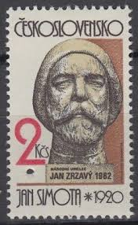 |
| eBay | 1949 Czechoslovakia 397-398 MNH | eBay | 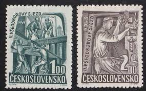 |
| eBay | Czechoslovakia 1967 MNH ** Mi 1718 Sc 1484 Henri Rousseau PRAGA 1968 World Exhi | eBay | 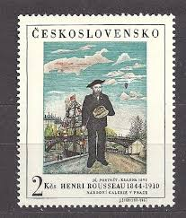 |
| The Philately | Czechoslovakia 1983 Mi 2721-2722 Prague Castle Sc 2466-2467 for sale at The Philately | 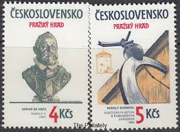 |
| Alamy | Stamp printed in Czechoslovakia shows Staff Captain Alois Vasatko (Royal Air Force), circa 1945 Stock Photo - Alamy | 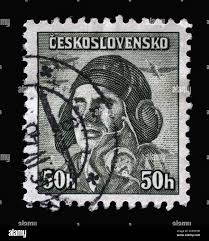 |
| Czechoslovakia 1949- The 9th Congress of the Communist Party of Czechoslovakia : r/philately | 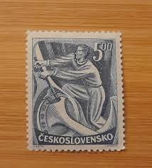 | |
| eBay | 1954 Czechoslovakia 75 Haleru Stamp | eBay | 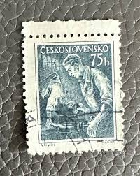 |
| Classic Ceskoslovensko Postage Stamps | 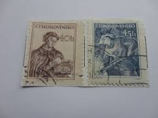 | |
| HipStamp | Czechoslovakia 272 - Used - 5h Staff Capt. Ridky (British Army) (1945) | Europe - Czech Republic, General Issue Stamp / HipStamp | 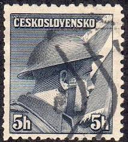 |
| Ladislava Šimková (@simkovaladislava) • Facebook | 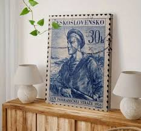 | |
| Dreamstime.com | Professions Series Stock Photos - Free & Royalty-Free Stock Photos from Dreamstime | 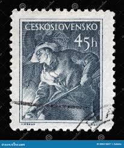 |
| Picxy | Image of Stamp Of The Czech Republic (European Union)-MP838057-Picxy | 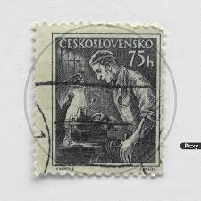 |
| eBay | 40h Ceskoslovensko Postwoman Postage Stamp 1954 | eBay | 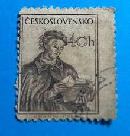 |
| Shutterstock | 1+ Thousand Vintage Steelworkers Royalty-Free Images, Stock Photos & Pictures | Shutterstock | 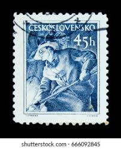 |
| eCRATER | Czechoslovakia Postage Stamp 1953 Scott# CS 602 Used 1 Kčs Klement Gottwald (1896-1953), president | 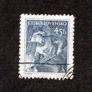 |
| HipStamp | Czechoslovakia 648 - Used - 45h Ironworker (1954) | Europe - Czech Republic, General Issue Stamp / HipStamp | 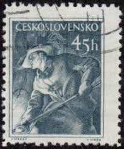 |
| Shutterstock | 11+ Thousand 2014 Series Royalty-Free Images, Stock Photos & Pictures | Shutterstock | 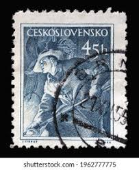 |
| Stampedia | stampedia CZECHOSLOVAKIA STAMP catalog | 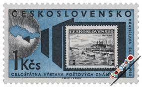 |
| eBay | Czechoslovakia Stamp Scott #397-398, Construction Workers, Used, SCV$2.10 | eBay | 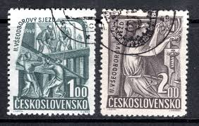 |
| eBay | Czechoslovakia 305-306 2 sets, MNH. Mi 478-478. Jan Sladky Kozina,peasant leader | eBay | 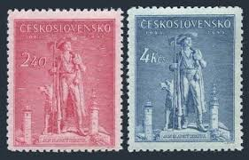 |
| BalkanAuction | 1963. Czechoslovakia. 30th International Foundry Congress, Prague | Postage stamps | Philately | BalkanAuction | 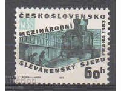 |
| Shutterstock | Czechoslovakia Circa 1977 Stamp Printed By Stock fotografie 171001259 | Shutterstock | 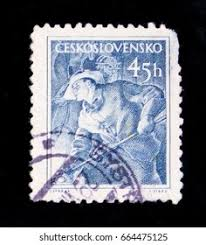 |
| Colnect | Stamp: Hussite priest (Czechoslovakia(Hussite) Mi:CS 182,Sn:CS 75,Yt:CS 171,Sg:CS 204,AFA:CS 46,POF:CS 163 📮 | 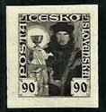 |
| Alamy | Ironworker vintage hi-res stock photography and images - Alamy | 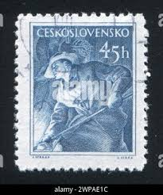 |
| Alamy | Valverde (CT), Italy - January 15, 2023: a old postage stamp from USA showing a drawing of George Washington Stock Photo - Alamy | 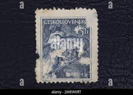 |
| Alamy | Jan zrzavy hi-res stock photography and images - Alamy | 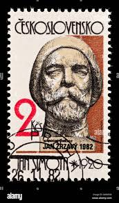 |
| eBay | 000 FDC Czechoslovakia cover 1952 Jan Amos Comenius Komensky Stamps | eBay | 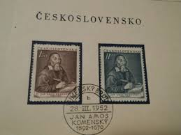 |
| eBay | Cars Czech & Czechoslovakian Postage Stamps for sale | eBay | 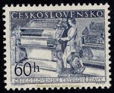 |
| HipStamp | Czechoslovakia #648 Ironworker Used | Europe - Czech Republic, General Issue Stamp / HipStamp | 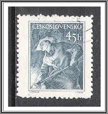 |
| Shutterstock | Moscow Russia Circa April 2016 Post Stock Photo 402508195 | Shutterstock | 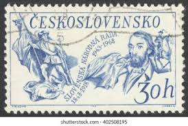 |
| Burda Auction | Hussite Issue 1920 / Czechoslovakia 1918-1939 / Philately / Mail Auction | Burda Auction | 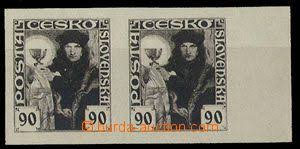 |
| Burda Auction | Postage stamps 1953-1992 / Czechoslovakia 1945-1983 - ex Wilhelms / Philately | Burda Auction | 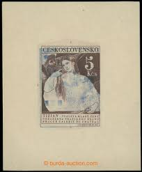 |
| Alamy | CZECHOSLOVAKIA - 1955 May 12: 30 haléř violet postage stamp depicting Foundry Worker. Issued to publicize the Third congress of the Trade Union Revolutionary Movement. A foundry is a factory that produces | 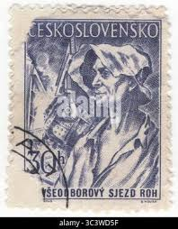 |
| Shutterstock | Senegal Circa 1989 Stamp Printed By Stock Photo 100146137 | Shutterstock | 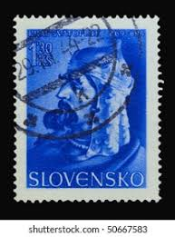 |
| HipStamp | Czechoslovakia 1920 Hussite 90h imperf colour trial proof... | Europe - Czech Republic, Stamp / HipStamp | 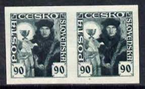 |
| Dreamstime.com | 197 Ancient Blast Furnace Stock Photos - Free & Royalty-Free Stock Photos from Dreamstime | 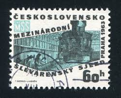 |
| Colnect | Czechoslovakia : Stamps [Year: 1954] [1/7] : Colnect 📮 | 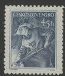 |
| Find Your Stamps Value | Value of saddam hussein iraq stamps | 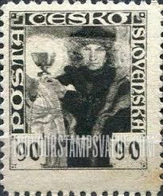 |
| Phil India Stamps | Products| child| Phil India Stamps | 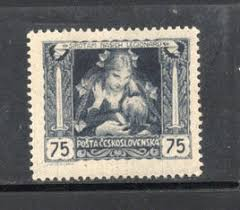 |
| Alamy | The postage stamp printed in Czechoslovakia shows Ferdinand I, Holy Roman Emperor , 1978 Stock Photo - Alamy | 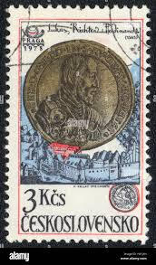 |
| Find Your Stamps Value | Value of 100h posta sirotam nasich legionaru stamps | 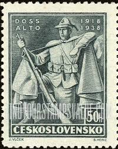 |
| Osta.ee | Tšehhoslovakkia 1946 (Mi-507 ) MNH (247705574) - Osta.ee | |
| eBay | Czechoslovakia - 1955 - SC 685-87 - Used - Complete set | eBay | |
| ebid.net | HAITI, BIRDS, Common Loon, 1975, 1.50 Gourdes on eBid United States | 194270866 | |
| Alamy | Valverde (CT), Italy - January 15, 2023: An old postage stamp from Czechoslovakia Stock Photo - Alamy | |
| Shutterstock | Czechoslovakia Circa 1983 Stamp Printed Czechoslovakia Stock Photo 76606861 | Shutterstock | |
| eBay | CZECHOSLOVAKIA Sc 397-98 NH ISSUE OF 1949 - UNION CONGRESS | eBay | |
| HipStamp | CZECHOSLOVAKIA Scott 290 MH* 1945 stamp | Europe - Czech Republic, General Issue Stamp / HipStamp | |
| StampWorld | Czechoslovakia - Postage stamps (1960 - 1969) - Page 1 | |
| Shutterstock | Czechoslovakia Circa 1954 Post Stamp Printed Stock Photo 379826599 | Shutterstock | |
| Wikimedia.org | Category:Ľudovít Varga - Wikimedia Commons | |
| HipStamp | Czechoslovakia P18: 5h Carrier Pigeon, used | Europe - Czech Republic, Newspaper Stamps Stamp / HipStamp |